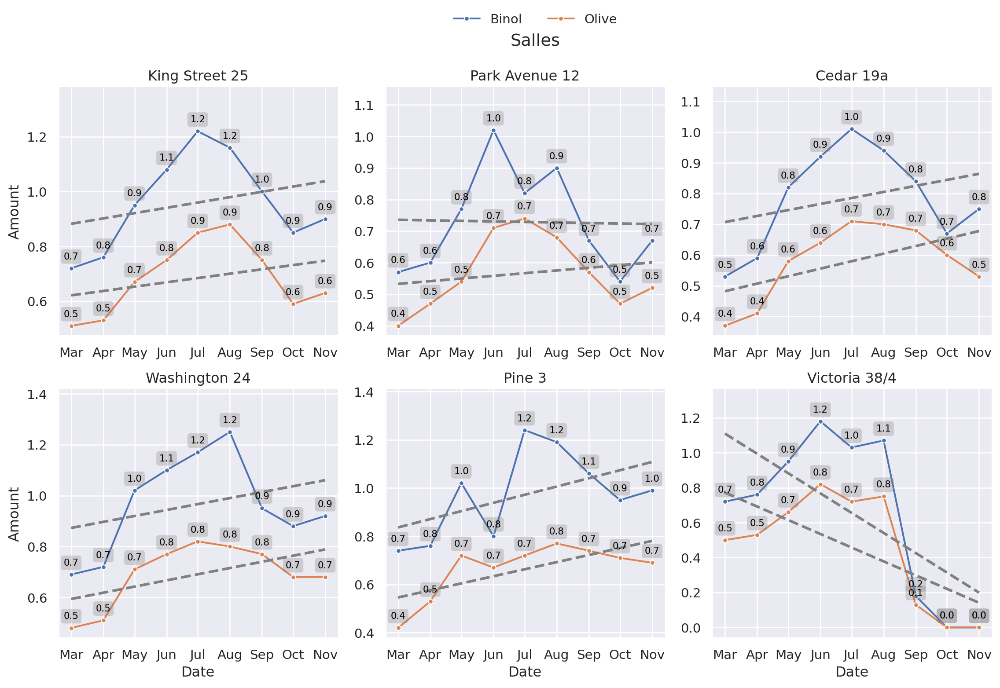

from sqlalchemy import create_engine
import duckdb as db
import polars as pl
from matplotlib.ticker import FuncFormatter
import matplotlib.dates as mdates
import seaborn as sns
import matplotlib.pyplot as plt
from locale import setlocale, LC_TIMEBinol vs Olive Sales Analysis
Comparative Analysis using Python, Polars, and Seaborn
Python
SQLite
DuckDB
Polars
Seaborn
Binol and Olive are competing businesses in the flower market. This analysis compares their historical sales across several shared shop locations to identify trends and market dominance in different areas.
Setup and Libraries
We use a modern, highly performant Python data stack for this analysis: DuckDB for querying the local SQLite database rapidly, Polars for fast data manipulation, and Seaborn combined with Matplotlib for creating rich visualizations.
Data Extraction
We connect directly to a local database using DuckDB’s powerful integration. We filter for specific competitive shop locations and extract the dataset into a Polars DataFrame. Finally, we convert the date strings into proper Date objects for time-series plotting.
# Connect to the local database
con = db.connect("~/Documents/kdb/notes/local.db")
# Query the sales data and convert directly to a Polars DataFrame
df = con.execute("""
SELECT * FROM portfolio.salles_binol_olivia
WHERE Shops IN ('Washington 24', 'Pine 3', 'Cedar 19a', 'Park Avenue 12', 'King Street 25', 'Victoria 38/4')
""").pl().with_columns(
# Convert string dates to datetime objects
pl.col('DT').str.to_date(format='%Y-%m-%d')
)Data Aggregation and Visualization
To visualize the sales side-by-side effectively, we need to transform our data from wide format (Binol and Olive as separate columns) to a long format (or melted) structure.
Using Seaborn’s FacetGrid, we can cleanly create small multiples—one plot for each shop—allowing for a direct visual comparison of the performance of the two companies at each location. We also add trend lines and value annotations to make the charts easy to read.
# Set the default Seaborn aesthetic theme
sns.set_theme()
# Melt the DataFrame so 'Product' becomes a categorical column linking 'Binol' and 'Olive'
df_melted = df.melt(
id_vars=["DT", "Shops"],
value_vars=["Binol", "Olive"],
variable_name="Product",
value_name="Value"
)
# Initialize a grid of plots, faceted by 'Shops'
g = sns.FacetGrid(
df_melted,
col='Shops',
hue='Product', # Color grouping
col_wrap=3, # Display 3 plots per row
sharey=False, # Allow y-axis to scale independently for each shop
sharex=False, # Allow x-axis to scale independently
height=4 # Height of each individual facet
)
# Map a lineplot to each facet
g = g.map(sns.lineplot, 'DT', 'Value', marker='o', markersize=4)
# Apply custom formatting and annotations to each subplot
for ax in g.axes.flat:
# Increase the maximum Y-axis value by 10% to prevent labels from getting cut off at the top
ylim = ax.get_ylim()
ax.set_ylim((ylim[0], ylim[1] * 1.1))
# Draw dashed trend lines for each plotted line
for line in ax.lines:
sns.regplot(
x=line.get_xdata(), y=line.get_ydata(), ax=ax,
scatter=False, # Hide scatter points, show only the trend line
color='gray',
ci=None, # Disable confidence interval shading
line_kws={'linestyle': '--'}
)
# Format X-axis tick labels to show abbreviated month names
ax.xaxis.set_major_formatter(mdates.DateFormatter('%b'))
# Define a function to annotate the data points with their exact values
def annotate_points(x, y, **kwargs):
ax = plt.gca()
for i in range(len(x)):
ax.annotate(
f"{y.values[i]:.1f}",
xy=(x.values[i], y.values[i]),
fontsize=8,
xytext=(0, 10), textcoords="offset points",
color="black",
bbox=dict(boxstyle="round", ec="none", fc="gray", alpha=0.3, pad=0.3),
va="center", ha="center"
)
# Map the annotation function to the grid
g.map(annotate_points, 'DT', 'Value')
# Adjust layout to make room for the main title and legend
g.fig.subplots_adjust(top=.9)
g.fig.suptitle('Monthly Sales Comparison by Location')
# Configure the unified legend
g.add_legend(title="Company")
sns.move_legend(
g, "center",
bbox_to_anchor=(.5, 1),
ncol=5, title=None, frameon=False,
)
# Set axis labels across all facets
g.set_axis_labels("Date", "Sales Amount")
# Set the title of each subplot based on the shop name
g.set_titles("{col_name}")
# Render the plot
plt.show()
Conclusion
By observing the trend lines, we can immediately identify which storefront location is dominated by Binol and which by Olive over time. Utilizing Polars and DuckDB ensures that even as the dataset scales, this aggregation and querying structure will remain extremely fast and memory-efficient.